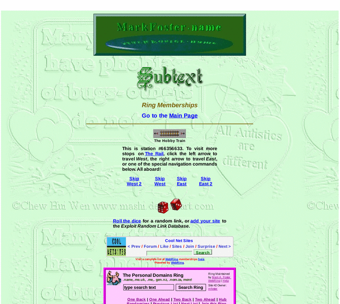

Previewing: Dr. Mark A. Foster's Autistic Self-Advocacy Website Previewing: Dr. Mark A. Foster's Autistic Self-Advocacy Website 
Use the left/right red arrow controls to navigate through this ring - Click the preview image to visit the member site.

This site focuses on Mark Foster's hobbies, including ventriloquism, website design, poetry, sociology, religion, genealogy, and more.
Dr. Mark A. Foster's Autistic Self-Advocacy Website owned by:
 mfoster mfoster
A member of the original webring since 04/22/2010.
|
|